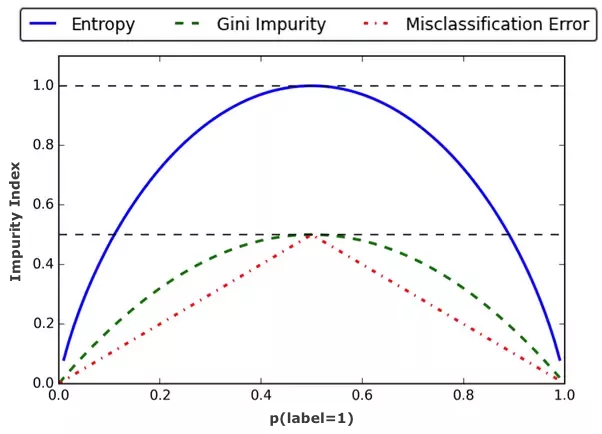

A decision tree is a classification or regression model based on a tree structure with input X and outputs Y. In a classification decision tree Y is a categorical variable and each leaf corresponds to a given class. In a regression decision tree Y is a continuous variable and the goal is to obtain leafs with minimum variances intra.
At each step, the algorithm chooses the explanatory variables that best splits the data (we will see after how to measure that).
Different types of decision trees exist depending on the split criterion.
Categorical outputs for a classification problem is the natural application of a decision tree. For a given leaf, the associated value is the most popular class in the leaf (most popular class during training).
For continuous output, for a given leaf, the associated value is the mean of the values of the leaf (mean of the training values).
A multi way splitting can always be reproduced by series of binary splits.
The majority of the implementations use binary splitting but some implementation (in R for example or in lightGBM) use multi-way splittings (see Resource 1).
A argument against multi-way splits is that data is fragmented too quickly leaving insufficient data at the next level (see Resource 2).
See:
If no stopping criterion is specified, the algorithm will split the data until obtaining a perfect tree (each value are correctly labeled for categorical output or each value is map to its true value for continuous variables). Also note that a single explanatory variable may be reused multiple time (thus, even with a simple explanatory variable it is possible to perfectly match the true labels).
Different stopping criteria exist:
The methods of setting an early stopping criterion is know as pre-pruning. Post-pruning is another technic that will reduce the size of the tree after creating it (see the part on Pruning at the end).
Depending of the feature’s type, the splitting may be more or less complicated. Indeed, the algorithm will choose the explanatory variable that best splits the data but for continuous or categorical (with more than 2 categories) variables, different possible splittings exist.
For example if the variable is the age, should the algorithm split in older than 50 and younger than 50 or older than 30 and younger than 30? For a categorical variables with unordered categories 1, 2, 3, 4, should the algorithm splits 1 vs 2, 3 and 4 or 1 and 2 vs 3 and 4 or 1 and 3 vs 2 and 4 etc.?
For a binary explanatory variable, the split decision is easy, the algorithm splits the data in two groups based on the selected feature’s value.
For continuous explanatory variables, the split may be done anywhere in the space of this variable. Theoretically, the number of possible splits is thus infinite. Two different methods exist to deal with this.
This number of possible splits can be reduce to the number of different values as splitting anywhere between 2 consecutive values will output the same result. For example if my values are 1.2, 2.3, 2.6 and 3.6, splitting at 3 or 3.1 will lead to the same result.
Hence pre-sort-based algorithm sorts the continuous variable considered and then choose the best possible split among the \(n_{value}-1\) possibilities.
Each sort of a feature costs \(O(n\log(n))\) time complexity and then each \(n-1\) splits are tested.
Histogram based algorithm buckets the continuous variables into bins and treats them as sorted categorical values. The cost of bucketing a feature is \(O(n)\) and then \(n_{bins}\) splits are tested.
Categorical unordered variable are a little bit more complex to deal with as c categories can be binary split in \(2^{c-1}-1\) different splits. The solution is to ordered this categories and apply the same method as for continuous variables.
The ordered is done using the output variables (see below).
If the output variable is a binary category, the ordering is done using the proportion of category 1 (or 0) in each class.
If the output variable is continuous, the ordering is done using the mean output value of each of the feature’s category.
If the output variable is a category, different methods exist, list in this Matlab page.
One-vs-all may be used: each output class is tried as the ‘one’ and the feature’s category are then sorted using the proportion of this category (as for a binary output),
Pull left by purity: 1) Start with all feature categories on the right leaf; 2) inspect the \(K\) categories that have the largest class probabilities for each output class; 3) Move the category with the maximum value of the split criterion (we will see later the split criteria) to the left branch; 4) Continue moving categories from right to left, recording the split criterion at each move, until the right child has only one category remaining; 5) Choose the split that gave the best criterion value during the sequence.
Principal Component-Based Partitioning: see Matlab page
See:
Depending on the output data type (continuous or categorical), different measure for splits exist.
For categorical outputs, different splitting methods with similar but different results exist. See this graph for an overview:

Let’s now look more in details these three metrics and their associated algorithms.
CART (for Classification And Regression Tree) is an algorithm based on a split criterion called Gini impurity.
Assume that, at a given step, we have G different groups. Let g be one of the group in G and let \(n_{class}\) be the total number of class (with some class present in g and other not present). The Gini impurity measure for the group g is then:
\[I^{Gini}(g)=\sum_{i=1}^{n_{class}} p(i \vert g)(1-p(i \vert g))=\sum_{i=1}^{n_{class}}(p(i \vert g)-p(i \vert g)^2)=\sum_{i=1}^{n_{class}} p(i \vert g)-\sum_{i=1}^{n_{class}} p(i \vert g)^2=1-\sum_{i=1}^{n_{class}} p(i \vert g)^2\]Where:
To compare different splittings (using different features) we compare the weighted sum of the Gini impurity measure over all the obtained groups.
Assume a sample of data where \(Y \in \{A, B\}\) with 10 A and 10 B. X are the explanatory variables.
Let’s compare the total Gini impurity measure obtained splitting via 2 different features:
The total Gini impurity measure splitting using feature 1 is :
\[\frac{10}{20}\left[1-\left(\frac{9}{10}\right)^2-\left(\frac{1}{10}\right)^2\right]+\frac{10}{20}\left[1-\left(\frac{1}{10}\right)^2-\left(\frac{9}{10}\right)^2\right]=0.04+0.04=0.08\]The total Gini impurity measure splitting using feature 2 is :
\[\frac{12}{20}\left[1-\left(\frac{10}{12}\right)^2-\left(\frac{2}{12}\right)^2\right]+\frac{8}{20}\left[1-\left(\frac{0}{8}\right)^2-\left(\frac{8}{8}\right)^2\right]=0.17+0=0.17\]So given the Gini impurity measure, the split using feature 1 is better (lower is better).
Entropy impurity is a measure similar to Gini impurity measure used by algorithm ID3 and its successor C4.5.
Once again, assume that, at a given step, we have G different groups. Let g be one of the group in G and let \(n_{class}\) be the total number of class (with some class present in g and other not present). The entropy impurity measure for the group g is then:
\[I^{Entropy}(g)=-\sum_{i=1}^{n_{class}}p(i \vert g) \log_2 (p(i \vert g))\]Where:
To compare different splittings (using different features) we compare the weighted sum of the Entropy impurity measure over all the obtained groups.
Information gain is the difference between the
Assume a sample of data where \(Y \in \{A, B\}\) with 10 A and 10 B. X are the explanatory variables.
Let’s compare the total Entropy impurity measure obtained splitting via 2 different features:
The total Entropy impurity measure splitting using feature 1 is :
\[-\frac{10}{20} \left[\left(\frac{9}{10}\right)\log\left(\frac{9}{10}\right) + \left(\frac{1}{10}\right)\log\left(\frac{1}{10}\right)\right] -\frac{10}{20} \left[\left(\frac{1}{10}\right)\log\left(\frac{1}{10}\right)+\left(\frac{9}{10}\right)\log\left(\frac{9}{10}\right)\right]=0.23+0.23=0.46\]The total Entropy impurity measure splitting using feature 2 is :
\[-\frac{12}{20} \left[\left(\frac{10}{12}\right)\log\left(\frac{10}{12}\right) + \left(\frac{2}{12}\right)\log\left(\frac{2}{12}\right)\right] -\frac{8}{20} \left[\left(\frac{0}{8}\right)\log\left(\frac{0}{8}\right)+\left(\frac{8}{8}\right)\log\left(\frac{8}{8}\right)\right]=0.41+0=0.41\]So given the Entropy impurity measure, the split using feature 2 is better (lower is better).
Another measure can be the classification error. We associate all the elements of a group to the majority of the group.
Once again, assume that, at a given step, we have G different groups. Let g be one of the group in G and let \(n_{class}\) be the total number of class (with some class present in g and other not present). The classification error measure for the group g is then:
\[I^{ClassErr}(g) = 1 - \max_i(p(i \vert g))\]Where:
To compare different splittings (using different features) we compare the sum of the Classification error measure over all the obtained groups.
Assume a sample of data where \(Y \in \{A, B\}\) with 10 A and 10 B. X are the explanatory variables.
Let’s compare the total Classification Error measure obtained splitting via 2 different features:
The total Classification Error measure splitting using feature 1 is :
\[\frac{10}{20}\left[1-\max\left(\frac{9}{10}, \frac{1}{10}\right)\right]+\frac{10}{20}\left[1-\max\left(\frac{1}{10}, \frac{9}{10}\right)\right]=0.05+0.05=0.1\]The total Classification Error measure splitting using feature 2 is :
\[\frac{12}{20}\left[1-\max\left(\frac{10}{12}, \frac{2}{12}\right)\right]+\frac{8}{20}\left[1-\max\left(\frac{0}{8}, \frac{8}{8}\right)\right]=0.1+0.0=0.102\]So given the Classification Error measure measure, the split using feature 1 is a little bit better (lower is better).
MARS for Multivariate adaptive regression spline is another decision tree algorithm.
See:
Pruning are a set of methods to limit or reduce a decision tree size.
See the part Stopping criteria: Pre-pruning.
Top down pruning starts at the initial node of the tree and decides to cut one of the two substrees depending on a criteria.
See:
Bottom up pruning starts at the leafs and decides to cut it or not depending on a criteria.
Reduced error pruning requires a validation set and works as follow:
Information gain pruning cut the leaf with smaller information gain. Leafs are cut until the desired number of leafs is obtained (this number of leafs is then an hyperparameter).
Cost complexity pruning is the method implemented in Scikit-Learn. It recursively cut subtrees of the tree based on a criteria. The goal of cost complexity pruning is to find subtrees to cut that minimise the size of the tree and the error rate.
The algorithm generates a series of tree \(T_0\), \(T_1\), \(T_2\), …, \(T_m\) where \(T_0\) is the initial tree and \(T_m\) is the root alone. At each step \(i\), the subtree \(t\) that minimise the following criteria is chosen to be cut:
\[\min_{t \in Subtree(T_{i-1})} \text{ } \frac{Error(prune(T_{i-1}, t))-Error(T_{i-1})}{\alpha(leaves(T_{i-1})-leaves(prune(T_{i-1}, t)))}\]Where:
At the end, the output decision tree is the tree from the series \(T_0\), \(T_1\), …, \(T_m\) that minimises the loss on the training set or a validation set. A high \(\alpha\) will lead to very shallow decision tree.
See:
See:
See: